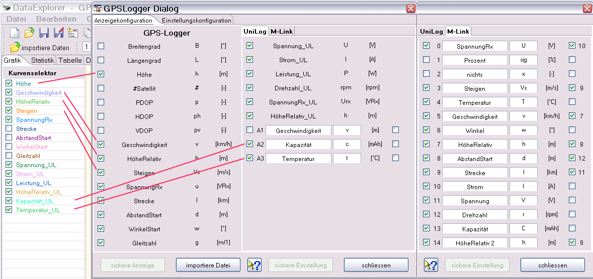
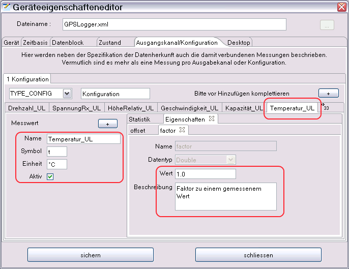
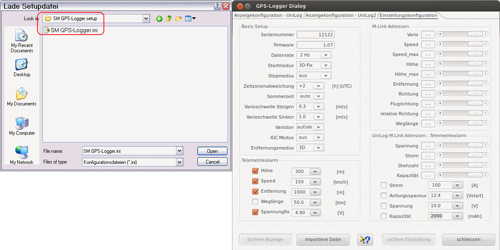

Der gezeigte Gerätedialog dient zur Konfiguration der Anzeige der ausgelesenen Daten. Nicht selektierte Messgrößen erscheinen dadurch nicht inder grafischen Anzeige. Dadurch wird die Übersichtlichkeit stark erhöt, zweidimensional schlecht darstellbare Kurven werden ausgeblendet. Über einen Dateiauswahldialog, erreichbar über "importiere Datei", können auch neue Dateien Eingelesen werden.

Hinweis: Ist die Anzeige erst einmal konfiguriert, wird diese Anzeigekonfiguration auch angewendet, wenn über die Kanal/Konfigurations- Auswahl in der Toolbar eine Konfiguration gewählt und dann über "importiere Datei" in der Toolsleiste der Dateidialog geöffnet und eine Datei eingelesen wird.
Wird ein UniLog als Messaufnehmer angeschlossen werden die drei Analogeingänge mit frei konfigurierbarem Namen und Messsymbol angezeigt. Die Einheit, wird aus den NMEA Daten übernommen. Als initiale Vorgaben sind 'Geschwindigkeit', 'Kapazität' und 'Temperatur' eingesetzt, die bei abweichender Einstellung anzupassen sind. In der grafischen Anzeige, bzw. dem Kurvenselektor erscheinen die Namen der Messgrö&szet&en für UniLog Messwerte immer mit angehängtem '_UL'. Sind eigene Messaufnehmer angeschlossen können über den Gerätekonfigurationseditor Offset, sowie Faktor angepasst werden.

Werden Multiplex Sensoren angeschlossen, werden die Einheiten aus den NMEA Daten übernommen. Die Namen und Symbole der Messwerte müssen entsprechend angepasst werden. Die initialen Vorgaben sind her nur beispielhaft eingesetzt. In der grafischen Anzeige, bzw. dem Kurvenselektor erscheinen die Namen der Messgrößen für M-Link Messwerte immer mit angehängtem '_ML'.
Auf der rechten Rand der Anzeigenkonfiguration befindet sich ein zusätzlicher Schalter, der eine halbautomatische synchronisation der Skalen ermöglicht. Wird hier selektiert wird auf Namensgleichkeit geprüft, bei entsprechender Übereinstimmung wird in der Gerätekonfigurationsdatei bei den Messwerten die entsprechende Eigenschaft eingesetzt. Funkioniert das nicht automatisch, bkeibt immer noch die Möglichkeit das manuell über den GerateKonfigurationseditor einzustellen. Durch Skalensynchronisation wird die verfügbare Anzeigefläche verrößert und es können Messwertaufnehmer direkt verglichen werden ohnen den Kurvenvergleich zu benutzen.
Der zweite Tabulator ermöglicht die Gerätekonfigurationsdatei einzulesen und auch zurückzuschreiben. Beim Wechsel auf diesen Tabulator wird der Dateiauswahldialog angezeigt. Das kann bei Bedarf wiederholt werden oder auch abgebrochen werden.

Es können die entprechenden Alarme eingestellt und bei angeschlossenen Multiplex Sensoren können die Rückkanaladressen hier konfiguriert werden.
Hinweis: Ein voreingestellter Verzeichnispfad kann über den Geräteeigenschafteneditor in der Sektion, Datenblock - Optionale Einstäge - Datenpfad, eingetellt werden. Diese Konfiguration ist dazu gedacht, den Verzeichnispfad einzustellen, der die Datendateien nach dem einstecken der SD-Karte enthält. Zum Laden der Setupdatei ist dann das 'SM GPS-Logger setup' auszuwählen.